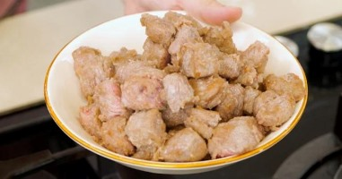

1 Orman kebabı için kuşbaşı etleri 1 yemek kaşığı zeytinyağı ve 2 yemek kaşığı un ile karıştırın.
2 Teflon bir tencerede kalan 2 yemek kaşığı zeytinyağı kızdırıp üzerine etleri atıp kavuralım. Etler suyunu çekince bir tabağa alın.
3 Aynı teflon tencerenin içinde büyükçe doğradığınız soğanları kavurun. Bu aşamada dilerseniz biraz daha zeytinyağı ekleyebilirsiniz. Daha sonra üzerine doğradığınız havuçları atıp kavurmaya devam edin. Son olarak patatesleri ekleyip kavurmaya devam edin.
4 Malzemeler kavrulunca etleri, 1 yemek kaşığı salçayı ve 1 yemek kaşığı terayağı ekleyip kavurun.
5 Üzerini geçecek kadar sıcak su ekledikten sonra tuzunu ve karabiberini de ekleyip etler iyice yumuşayana kadar pişirin.
6 Etler iyice yumuşadıktan sonra bezelyeleri ekleyin. Etlerin iyice pişip pişmediğini mutlaka kontrol edin.
7 Kalan 1 yemek kaşığı terayağında bolca kekik kavurup yemeğin üzerine gezdirin.
8 Orman kebabı hazır. Yemeğinizi ocaktan alın. Dilediğiniz gibi servis edebilirsiniz. Afiyet olsun.